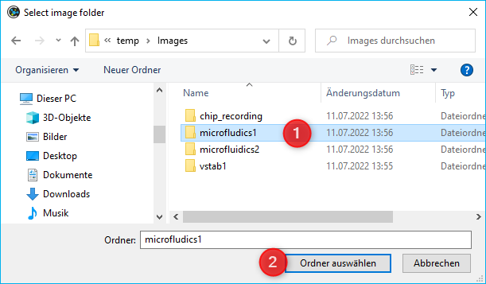

17. Video Builder Plugin
17.1. Introduction to Video Builder Plugin
The Video Builder plug-in allows you to quickly compose videos from individual images taken by timing or scripting via the camera or the microscope plug-ins. This is useful, for instance, for time laps recordings of slow microfluidic processes or for long-exposure microscope pictures.
To open the Video Builder dialog, select the relevant item from the main menu via .

The Video Builder dialog contains the following elements (see figure below):
Tool bar,
List of image folder(s),
Video parameter settings,
Thumbnail of the currently processed picture,
Progress bar of the processing step.
17.2. Video Assembly
The following description shows you how to assemble a video from individual images.
17.2.1. Step 1 – Select Image Files

To select the image files that you want to process, first locate the relevant folder and open it via Select Image Folder button in the tool bar. This opens a dialog box (see figure below) that allows you to navigate to the folder containing your image files ❶. Open the folder by clicking on Choose ❷.
17.2.2. Step 2 – Video Assembly Parameters
The section Video Parameters is to configure the parameter settings for the image assembly process.

You can set the following parameters:
Frames/s – configures the frame rate, i.e., how many images are to be shown per second.
Skip Frames – set the number of images that are excluded from the video. If this value is set to zero, all image files will be used; if set to one, for instance, every other image will be skipped and thus only every second image will be used to assemble the video.
Based on the number of available images and the two parameters just set, the third box Duration (s) ❸ will show the length of the final video.
{kind=link}
In addition, the software offers the possibility to de-shake (stabilize) the video sequence using the built-in video stabilizer / deshaker. Just check the Activate Deshaker button to enable video stabilization.
Tip
Video sequences (e.g. of images captured from microscope camera) can be stabilized using the de-shaker function.
Important
The de-shaking step will increase the time for building a video.
17.2.3. Step 3 – Start Video Assembly
{kind=link}
Start the assembly process by clicking on the Build Video button. This will open a dialog box that is to define the target directory and the name of the video file. Processing will start immediately thereafter.
{kind=link}
The assembly process may take several minutes, in particular when a large number of images is to be processed. Processing may be continued as a background task by activating the Move to background feature. This will close the Video Builder dialog and allows you to continue to work with the application.
If a process is being carried in the background, this will be indicated in the status bar ❶ of the main application window and in the Progress View ❷ (see figure below).

You will be notified via the application’s Event Log as soon as the video assembly process has been completed(see figure below).

Now you may start the process with a new set of pictures or with different settings.